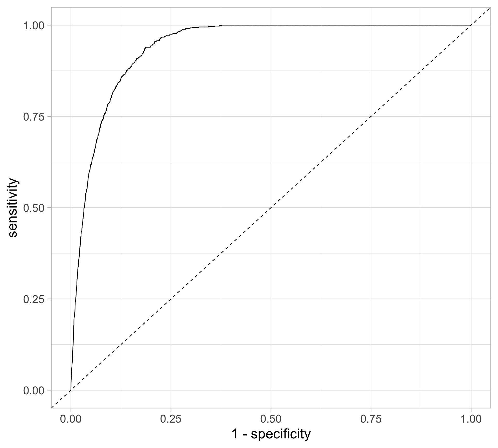
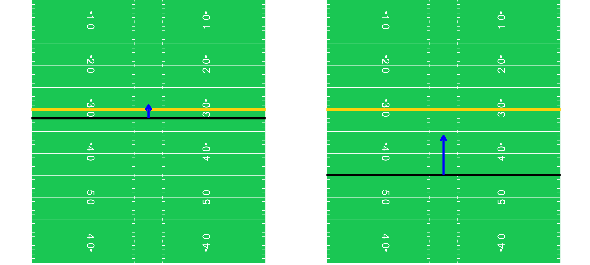
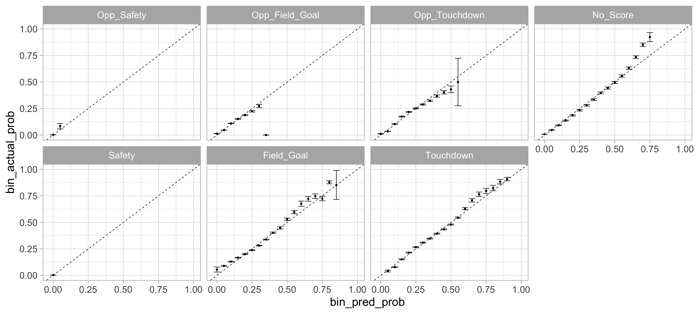

Supervised learning: multinomial classification
SURE 2024
Department of Statistics & Data Science
Carnegie Mellon University
Binary classification
Review: binary classification
Classification: predicting a categorical response for an observation (since it involves assigning the observation to a category/class)
Binary classification: response is binary
Often, we are more interested in estimating the probability for each category of the response
Methods: logistic regression, GAMs, tree-based methods, to name a few
Evaluating the prediction threshold
- For each observation, obtain predicted class by comparing the predicted probability to some cutoff \(c\) (typically, \(c=0.5\)) \[\hat{Y} =\left\{\begin{array}{ll} 1, & \hat{p}(x)>c \\ 0, & \hat{p}(x) \leq c \end{array}\right.\]
- Given the classifications, we can form a confusion matrix:
Confusion matrix
We want to maximize all of the following (positive means 1, negative means 0):
- Accuracy: How often is the classifier correct? \((\text{TP} + \text{TN}) \ / \ {\text{total}}\)
- Precision: How often is it right for predicted positives? \(\text{TP} \ / \ (\text{TP} + \text{FP})\)
- Sensitivity (or true positive rate (TPR) or power): How often does it detect positives? \(\text{TP} \ / \ (\text{TP} + \text{FN})\)
- Specificity (or true negative rate (TNR), or 1 - false positive rate (FPR)): How often does it detect negatives? \(\text{TN} \ / \ (\text{TN} + \text{FP})\)
Receiver operating characteristic (ROC) curve
Question: How do we balance between high power and low false positive rate?
Check all possible values for the cutoff \(c\), plot the power against false positive rate
Want to maximize the area under the curve (AUC)

Plotting an ROC curve
Example: MLB home run probability
Model: logistic regression with exit velocity and launch angle as predictors
Plotting an ROC curve
Multinomial classification
Motivating example: expected points in American football
Football is complicated — not all yards are created equal

Play evaluation in American football
- How do we overcome the limitations of yards gained?
- Expected points: how many points have teams scored in similar situations?
- Win probability: have teams in similar situations won the game?
NFL play-by-play data
Each row is a play with contextual information:
- Possession team: team with the ball, on offense (opposing team is on defense)
Down: 4 downs to advance the ball 10 (or more) yards
- New set of downs, else turnover to defense
- Yards to go: distance in yards to go for a first down
- Yard line: distance in yards away from opponent’s endzone (100 to 0) - the field position
Time remaining: seconds remaining in game, each game is 3600 seconds long
- 4 quarters, halftime in between, followed by a potential overtime
NFL play-by-play data
Drive: a series of plays, changes with possession and the types of scoring events:
No Score: 0 points - turnover the ball or half/game ends
Field Goal: 3 points - kick through opponent’s goal post
Touchdown: 7 points - enter opponent’s end zone
Safety: 2 points for opponent - tackled in own endzone
Next score: type of next score with respect to possession team
For: Touchdown (7), Field Goal (3), Safety (2)
Against: -Touchdown (-7), -Field Goal (-3), -Safety (-2)
No Score (0)
Expected points
Expected points: Measure the value of play in terms of \(\mathbb{E}[\text{points of next scoring play}]\)
- i.e., historically, how many points have teams scored when in similar situations?
Response: \(Y \in\) {touchdown, field goal, safety, no score, -safety, -field goal, -touchdown}
Predictors: \(\mathbf{X} =\) {down, yards to go, yard line, …}
| \(Y\) | value | probability |
|---|---|---|
| touchdown | 7 | |
| field goal | 3 | |
| safety | 2 | |
| no score | 0 | |
| -safety | -2 | |
| -field goal | -3 | |
| -touchdown | -7 |
Task: estimate the probabilities of each scoring event to compute expected points
Outcome probabilities \[P(Y = y \mid \mathbf{X})\]
Expected points \[E(Y \mid \mathbf{X}) = \sum_{y \in Y} y \cdot P(Y=y \mid\mathbf{X})\]
Important question: Which model do we use when a categorical response variable has more than two classes?
Review: logistic regression
Response variable \(Y\) is binary categorical with two possible values: 1 or 0
(i.e. binary classification problem)
Estimate the probability
\[ p(x) = P(Y = 1 \mid X = x) \]
Assuming that we are dealing with two classes, the possible observed values for \(Y\) are 0 and 1, \[ Y \mid x \sim {\rm Binomial}(n=1,p=\mathbb{E}[Y \mid x]) \]
To limit the regression between \([0, 1]\), use the logit function (i.e., the log-odds ratio)
\[ \log \left[ \frac{p(x)}{1 - p(x)} \right] = \beta_0 + \beta_1 x_1 + \cdots + \beta_p x_p \]
meaning
\[p(x) = \frac{e^{\beta_0 + \beta_1 x_1 + \cdots + \beta_p x_p}}{1 + e^{\beta_0 + \beta_1 x_1 + \cdots + \beta_p x_p}}\]
Multinomial logistic regression
Extend logistic regression to \(K\) classes (via the softmax function):
\[P(Y=k^* \mid X=x)=\frac{e^{\beta_{0 k^*}+\beta_{1 k^*} x_{1}+\cdots+\beta_{p k^*} x_{p}}}{\sum_{k=1}^{K} e^{\beta_{0 k}+\beta_{1 k} x_{1}+\cdots+\beta_{p k} x_{p}}}\]
Estimate coefficients for \(K - 1\) classes relative to reference class
For example, let \(K\) be the reference then we use \(K - 1\) logit transformations
Notation: \(\boldsymbol{\beta}\) for vector of coefficients and \(\mathbf{X}\) for matrix of predictors
\[\begin{array}{c} \log \Big( \frac{P(Y = 1 \ \mid \ \mathbf{X})}{P(Y=K \ \mid \ \mathbf{X})} \Big) = \boldsymbol{\beta}_{1} \cdot \mathbf{X} \\ \log \Big( \frac{P(Y=2 \ \mid \ \mathbf{X})}{P(Y=K \ \mid \ \mathbf{X})} \Big) =\boldsymbol{\beta}_{2} \cdot \mathbf{X} \\ \vdots \\ \log \Big( \frac{P(Y=K-1 \ \mid \ \mathbf{X})}{P(Y=K \ \mid \ \mathbf{X})} \Big) =\boldsymbol{\beta}_{K-1} \cdot \mathbf{X} \end{array}\]
Multinomial logistic regression for the next scoring event
\(Y \in\) {touchdown, field goal, safety, no score, -safety, -field goal, -touchdown}
\(\mathbf{X} =\) {down, yards to go, yard line, …}
Model is specified with six logit transformations relative to no score:
\[\begin{array}{c} \log \left(\frac{P(Y = \text { touchdown } \mid \ \mathbf{X})}{P(Y = \text { no score } \mid \ \mathbf{X})}\right)=\mathbf{X} \cdot \boldsymbol{\beta}_{\text {touchdown }} \\ \log \left(\frac{P(Y = \text { field goal } \mid \ \mathbf{X})}{P(Y=\text { no score } \mid \ \mathbf{X})}\right)=\mathbf{X} \cdot \boldsymbol{\beta}_{\text {field goal }}, \\ \vdots & \\ \log \left(\frac{P(Y = -\text {touchdown } \mid \ \mathbf{X})}{P(Y = \text { no score } \mid \ \mathbf{X})}\right)=\mathbf{X} \cdot \boldsymbol{\beta}_{-\text {touchdown }}, \end{array}\]
Output: predicted probability associated with each of the next scoring events for each play
Example
NFL play-by-play dataset (2012-2022) with the next score (in a half) for each play
Following steps provided by nflfastR, which follows the OG nflscrapR
Fitting a multinomial logistic regression model
library(nnet)
ep_model <- multinom(next_score_half ~ half_seconds_remaining + yardline_100 + down + log_ydstogo +
log_ydstogo * down + yardline_100 * down,
data = nfl_pbp, maxit = 300)# weights: 98 (78 variable)
initial value 820568.904843
iter 10 value 644396.481292
iter 20 value 628421.265697
iter 30 value 614354.879384
iter 40 value 601877.827175
iter 50 value 599094.485735
iter 60 value 582578.628173
iter 70 value 563639.418072
iter 80 value 555744.384886
iter 90 value 553787.681372
iter 100 value 553756.085367
final value 553755.982007
convergedIn the summary, notice the usual type of output, including coefficient estimates for every next scoring event, except for the reference level No_Score
Obtain probabilities for each categories
library(broom)
event_prob <- ep_model |>
predict(newdata = nfl_pbp, type = "probs") |>
as_tibble() |>
mutate(ep = Touchdown * 7 + Field_Goal * 3 + Safety * 2 + Opp_Touchdown * -7 + Opp_Field_Goal * -3 + Opp_Safety * -2)
event_prob# A tibble: 421,689 × 8
No_Score Field_Goal Opp_Field_Goal Opp_Safety Opp_Touchdown Safety Touchdown
<dbl> <dbl> <dbl> <dbl> <dbl> <dbl> <dbl>
1 0.000944 0.191 0.169 0.00630 0.302 0.00415 0.326
2 0.00102 0.188 0.164 0.00433 0.284 0.00434 0.354
3 0.00116 0.153 0.180 0.00459 0.301 0.00490 0.356
4 0.00128 0.232 0.136 0.00259 0.234 0.00415 0.391
5 0.000787 0.297 0.0709 0.000295 0.118 0.00378 0.509
6 0.000871 0.317 0.0844 0.000513 0.144 0.00439 0.449
7 0.00110 0.350 0.0990 0.000686 0.169 0.00483 0.375
8 0.000780 0.321 0.0476 0.0000898 0.0768 0.00334 0.550
9 0.000875 0.355 0.0563 0.000175 0.0941 0.00397 0.489
10 0.000570 0.338 0.0291 0.0000221 0.0459 0.00284 0.583
# ℹ 421,679 more rows
# ℹ 1 more variable: ep <dbl>Models in production
- It’s naive to assess the model on the training data it was learned on
- How is our model going to be used in practice?
The model itself will be a functional tool that can be applied to new observations without the need to retrain (for a considerable amount of time)
- e.g., built an expected points model and want to use it new season
- Constant retraining is unnecessary and will become computationally burdensome
- Ultimate goal: have a model that generalizes well to new data
Review: \(k\)-fold cross-validation
- Randomly split data into \(K\) equal-sized folds (i.e., subsets of data)
Then for each fold \(k\) in 1 to \(K\):
Train the model on data excluding observations in fold \(k\)
Generate predictions on holdout data in fold k
(Optional) Compute some performance measure for fold \(k\) predictions (e.g., RMSE, accuracy)
- Aggregate holdout predictions to evaluate model performance
(Optional) Aggregate performance measure across \(K\) folds
- e.g., compute average RMSE, including standard error for CV estimate
Takeaway: We can assess our model performance using anything we want with cross-validation
Review: calibration (for classification)
Key idea: For a classifier to be calibrated, the actual probabilities should match the predicted probabilities
Process
Bin the data according to predicted probabilities from model
- e.g., [0, 0.1], (0.1, 0.2], …, (0.9, 1]
- For each bin, compute proportion of observations whose class is the positive class
- Plot observed proportions against the predicted probabilities bin midpoints
Visualization: calibration curves (or reliability diagrams)
Cross-validation calibration
- Randomly split data into \(K\) equal-sized folds (i.e., subsets of data)
Then for each fold \(k\) in 1 to \(K\):
Train a classifier on data excluding observations in fold \(k\)
Generate predicted probabilities on holdout data in fold \(k\)
- Aggregate holdout probabilities to create calibration plot
Alternatively: Create calibration plot for each holdout fold separately
- Could average across bin calibration estimates
(though, standard errors might be messed up)
- Could average across bin calibration estimates
Cross-validation for next scoring event model
- Can we randomly split data into \(K\) equal-sized folds?
- Why not? Observations are correlated (at the play-level)
- For model evaluation purposes, we cannot randomly assign plays to different training and test folds
- Alternative ideas? Randomly assign game-drives, game-halves, games, weeks
- Another idea that avoids randomness: leave-one-season-out cross validation
Leave-one-season-out calibration
Since the model outputs probability estimates, use out-of-sample calibration to evaluate the model
Assess how well the model is calibrated for each scoring event
ep_cv <- function(s) {
test <- nfl_pbp |> filter(season == s)
train <- nfl_pbp |> filter(season != s)
ep_model <- multinom(next_score_half ~ half_seconds_remaining + yardline_100 + down +
log_ydstogo + log_ydstogo * down + yardline_100 * down,
data = train, maxit = 300)
ep_out <- ep_model |>
predict(newdata = test, type = "probs") |>
as_tibble() |>
mutate(next_score_half = test$next_score_half,
season = s)
return(ep_out)
}
seasons <- unique(nfl_pbp$season)
ep_cv_calibration <- seasons |>
map(ep_cv) |>
bind_rows()# weights: 98 (78 variable)
initial value 745900.440604
iter 10 value 582572.386661
iter 20 value 567612.722519
iter 30 value 553128.934420
iter 40 value 539573.367519
iter 50 value 537142.707480
iter 60 value 530470.755017
iter 70 value 514487.037163
iter 80 value 505049.356679
iter 90 value 503664.462255
iter 100 value 503645.015371
final value 503644.994544
converged
# weights: 98 (78 variable)
initial value 745384.774415
iter 10 value 579676.888404
iter 20 value 565801.534090
iter 30 value 551821.702311
iter 40 value 538083.862911
iter 50 value 535516.763693
iter 60 value 522268.990541
iter 70 value 510214.212169
iter 80 value 503279.229245
iter 90 value 502419.020138
iter 100 value 502408.109824
final value 502408.057516
converged
# weights: 98 (78 variable)
initial value 746102.815260
iter 10 value 581128.133082
iter 20 value 566363.466914
iter 30 value 553159.787960
iter 40 value 538887.792660
iter 50 value 536394.121640
iter 60 value 517227.685617
iter 70 value 508543.818882
iter 80 value 504334.318742
iter 90 value 503192.902124
iter 100 value 503174.592780
final value 503174.526755
converged
# weights: 98 (78 variable)
initial value 745509.312664
iter 10 value 579618.006957
iter 20 value 564306.403454
iter 30 value 551208.139857
iter 40 value 538465.941964
iter 50 value 536710.560522
iter 60 value 528973.377193
iter 70 value 511260.471224
iter 80 value 504532.493456
iter 90 value 502789.244226
iter 100 value 502772.289562
final value 502772.144039
converged
# weights: 98 (78 variable)
initial value 746161.192564
iter 10 value 583318.098071
iter 20 value 565452.660017
iter 30 value 553004.511199
iter 40 value 535661.314128
iter 50 value 533835.120716
iter 60 value 526651.621249
iter 70 value 512879.814523
iter 80 value 505125.732253
iter 90 value 503780.650158
iter 100 value 503768.498849
iter 100 value 503768.495637
iter 100 value 503768.495615
final value 503768.495615
converged
# weights: 98 (78 variable)
initial value 746803.342913
iter 10 value 583690.720571
iter 20 value 566306.979616
iter 30 value 551774.114094
iter 40 value 537259.662266
iter 50 value 535113.563551
iter 60 value 526452.935962
iter 70 value 512964.056547
iter 80 value 504964.169296
iter 90 value 503268.251731
iter 100 value 503249.111787
final value 503248.815177
converged
# weights: 98 (78 variable)
initial value 747715.974773
iter 10 value 583786.077390
iter 20 value 567105.715518
iter 30 value 552434.743020
iter 40 value 537595.742939
iter 50 value 535193.954596
iter 60 value 521167.329143
iter 70 value 510112.965931
iter 80 value 506456.019829
iter 90 value 505635.711866
iter 100 value 505619.618820
final value 505619.547336
converged
# weights: 98 (78 variable)
initial value 746970.691186
iter 10 value 584955.081885
iter 20 value 567314.200251
iter 30 value 550787.724286
iter 40 value 535225.530029
iter 50 value 532916.786298
iter 60 value 527702.038408
iter 70 value 510892.228628
iter 80 value 505225.792024
iter 90 value 503907.572475
iter 100 value 503898.506729
final value 503898.421803
converged
# weights: 98 (78 variable)
initial value 747488.303286
iter 10 value 583119.603702
iter 20 value 566841.648280
iter 30 value 551376.979315
iter 40 value 535103.066727
iter 50 value 532514.969609
iter 60 value 520124.869874
iter 70 value 509228.087974
iter 80 value 505351.542571
iter 90 value 504685.805585
iter 100 value 504672.226391
final value 504672.212695
converged
# weights: 98 (78 variable)
initial value 743503.079301
iter 10 value 580780.250261
iter 20 value 563224.055560
iter 30 value 548344.717654
iter 40 value 535963.961916
iter 50 value 533709.672202
iter 60 value 514506.546758
iter 70 value 506529.898117
iter 80 value 503369.501382
iter 90 value 502499.936997
iter 100 value 502491.333787
final value 502491.323111
converged
# weights: 98 (78 variable)
initial value 744149.121470
iter 10 value 584360.429636
iter 20 value 565852.095368
iter 30 value 554113.251762
iter 40 value 541601.089529
iter 50 value 539204.094419
iter 60 value 520343.899251
iter 70 value 510733.738542
iter 80 value 503381.508098
iter 90 value 501755.600539
iter 100 value 501730.994412
final value 501730.752384
convergedLeave-one-season-out calibration
ep_cv_calibration |>
pivot_longer(No_Score:Touchdown,
names_to = "event",
values_to = "pred_prob") |>
mutate(bin_pred_prob = round(pred_prob / 0.05) * 0.05) |>
group_by(event, bin_pred_prob) |>
summarize(n_plays = n(),
n_events = length(which(next_score_half == event)),
bin_actual_prob = n_events / n_plays,
bin_se = sqrt((bin_actual_prob * (1 - bin_actual_prob)) / n_plays)) |>
ungroup() |>
mutate(bin_upper = pmin(bin_actual_prob + 2 * bin_se, 1),
bin_lower = pmax(bin_actual_prob - 2 * bin_se, 0)) |>
mutate(event = fct_relevel(event, "Opp_Safety", "Opp_Field_Goal", "Opp_Touchdown",
"No_Score", "Safety", "Field_Goal", "Touchdown")) |>
ggplot(aes(x = bin_pred_prob, y = bin_actual_prob)) +
geom_abline(slope = 1, intercept = 0, color = "black", linetype = "dashed") +
geom_point() +
geom_errorbar(aes(ymin = bin_lower, ymax = bin_upper)) +
expand_limits(x = c(0, 1), y = c(0, 1)) +
facet_wrap(~ event, ncol = 4)Leave-one-season-out calibration
Player and team evaluations
Expected points added (EPA): \(EP_{end} - EP_{start}\)
Other common measures
Total EPA (for both offense and defense)
EPA per play
Success rate: fraction of plays with positive EPA
Multinomial classification with XGBoost
Note: XGBoost requires the multinomial categories to be numeric starting at 0
library(xgboost)
nfl_pbp <- read_csv("https://github.com/36-SURE/36-SURE.github.io/raw/main/data/nfl_pbp.csv.gz") |>
mutate(next_score_half = fct_relevel(next_score_half,
"No_Score", "Safety", "Field_Goal", "Touchdown",
"Opp_Safety", "Opp_Field_Goal", "Opp_Touchdown"),
next_score_label = as.numeric(next_score_half) - 1) Leave-one-season-out cross-validation
ep_xg_cv <- function(s) {
test <- nfl_pbp |> filter(season == s)
train <- nfl_pbp |> filter(season != s)
x_test <- test |> select(half_seconds_remaining, yardline_100, down, ydstogo) |> as.matrix()
x_train <- train |> select(half_seconds_remaining, yardline_100, down, ydstogo) |> as.matrix()
ep_xg <- xgboost(data = x_train, label = train$next_score_label,
nrounds = 100, max_depth = 3, eta = 0.3, gamma = 0,
colsample_bytree = 1, min_child_weight = 1, subsample = 1, nthread = 1,
objective = 'multi:softprob', num_class = 7, eval_metric = 'mlogloss', verbose = 0)
ep_xg_pred <- ep_xg |>
predict(x_test) |>
matrix(ncol = 7, byrow = TRUE) |>
as_tibble()
colnames(ep_xg_pred) <- c("No_Score", "Safety", "Field_Goal", "Touchdown",
"Opp_Safety", "Opp_Field_Goal", "Opp_Touchdown")
ep_xg_pred <- ep_xg_pred |>
mutate(next_score_half = test$next_score_half,
season = s)
return(ep_xg_pred)
}Model calibration
ep_xg_cv_pred |>
pivot_longer(No_Score:Opp_Touchdown,
names_to = "event",
values_to = "pred_prob") |>
mutate(bin_pred_prob = round(pred_prob / 0.05) * 0.05) |>
group_by(event, bin_pred_prob) |>
summarize(n_plays = n(),
n_events = length(which(next_score_half == event)),
bin_actual_prob = n_events / n_plays,
bin_se = sqrt((bin_actual_prob * (1 - bin_actual_prob)) / n_plays)) |>
ungroup() |>
mutate(bin_upper = pmin(bin_actual_prob + 2 * bin_se, 1),
bin_lower = pmax(bin_actual_prob - 2 * bin_se, 0)) |>
mutate(event = fct_relevel(event, "Opp_Safety", "Opp_Field_Goal", "Opp_Touchdown",
"No_Score", "Safety", "Field_Goal", "Touchdown")) |>
ggplot(aes(x = bin_pred_prob, y = bin_actual_prob)) +
geom_abline(slope = 1, intercept = 0, color = "black", linetype = "dashed") +
geom_point() +
geom_errorbar(aes(ymin = bin_lower, ymax = bin_upper)) +
expand_limits(x = c(0, 1), y = c(0, 1)) +
facet_wrap(~ event, ncol = 4)